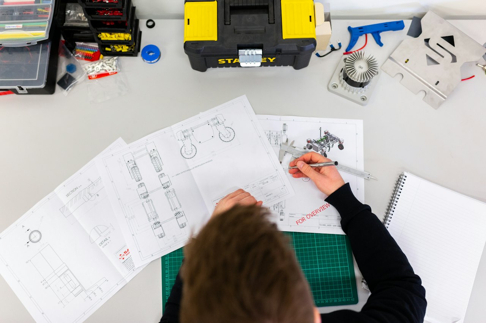

Quality in practice
Inspection at every checkpoint
每一道检验节点都有记录与留档

量具与仪校计量器具定期校准，确保测量准确一致。

首件确认对照图纸与样品封样，批量前逐项核对。
出货检验外观、尺寸与功能抽检，留档拍照上传。
可验证的质量管控
Because we coordinate many workshops rather than owning one factory, quality is managed by a documented plan — not trust alone. Every order gets checkpoints, records and (on request) independent inspection.
基于 AQL 的检验方案
Each purchase order carries a written QC plan. We default to AQL Level II, Acceptable Quality Limit 2.5 for general hardware; tighter AQL 1.5 / Level III is applied on request for critical or higher-risk items.
Critical dimensions, cosmetic class and AQL level agreed at quotation and frozen at sample sign-off.
Inspection by recognized AQL sampling (single / double sampling as agreed), with photo records.
Inspection report, dimensional log and load-out photos retained per batch and shared with you.
每单五个检验节点
Material certificate / visual check at the workshop before production starts.
First-article sample approved and signed off before the mass run begins.
Scheduled checkpoints during production against the agreed spec and tolerances.
Dimensional and visual inspection before packing; function check where applicable.
Photographed packing, carton count and documentation check at shipment.
Independent third-party (SGS / TÜV / Intertek-style) inspection arranged per your PO.
我们能做的检测
| Check | Method / equipment | On request |
|---|---|---|
| Dimensional | Calipers, micrometers, gauges, go/no-go fixtures | CMM report |
| Visual & cosmetic | AQL sampling, defect classification | — |
| Plating / coating | Plating-thickness gauge | Salt-spray test |
| Material | Mill / material certificates | Tensile test |
| Substance compliance | — | RoHS / REACH test (SGS / TÜV / Intertek) |
我们可以与不可声称的
We coordinate QC across vetted workshops — we are not the manufacturer. We manage and record inspection, but final fitness for your application rests on the sample sign-off you approve. Certification and test reports are issued by the assigned workshop or accredited third-party bodies, not by Anchormere itself. See the Certifications page for the honest scope of what we can support.
Per-batch material and test certificates are provided where specified in the PO; general CoO, CI and Packing List ship with every order. See Packaging & Logistics.
每一道检验节点都有记录与留档
量具与仪校计量器具定期校准，确保测量准确一致。

首件确认对照图纸与样品封样，批量前逐项核对。
出货检验外观、尺寸与功能抽检，留档拍照上传。
需要为您的产品定制质检方案？
Tell us the category and critical dimensions — we'll propose AQL level and checkpoints per PO.
Talk to an engineer WhatsApp us